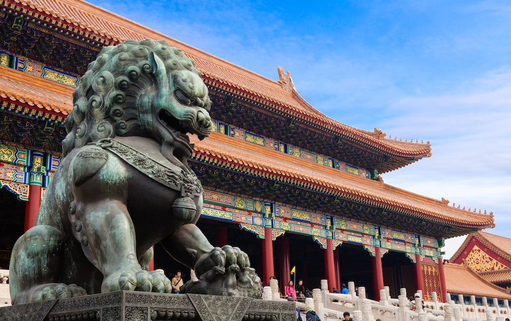
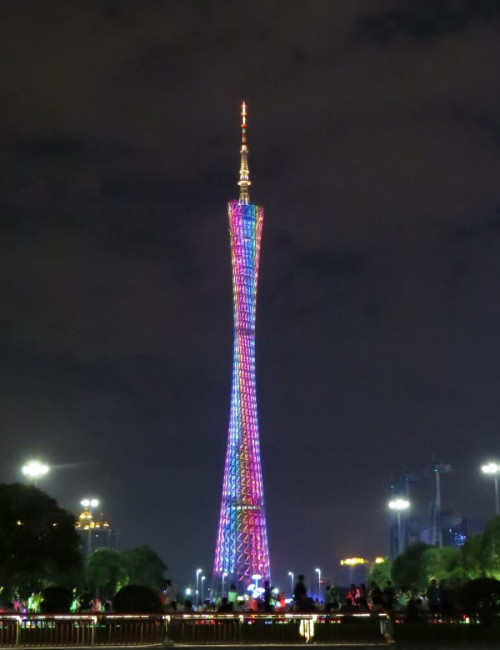

Traveling alone as a woman in China was a dynamic experience. I have gone on to visit this vast, ancient country three times, all in different places. And let’s just say, it exceeded all my expectations and my journey was beyond compare. It is such a mysterious and exotic land, steeped in history, culture, and stunning natural views such as West Lake, one of the prettiest lakes in the world. Within it, the bustling modern cities and technology envelopes its people. My many travels proved that China is one of a kind, different from any other place.
The Republic of China is relatively safe. No different than any big countries and crowded cities. I will even say that I felt safer in China than I did in some of the countries I’ve lived in. Yes, I had a preconceived notion of what to expect and guaranteed, I was a little bit intimidated to be traveling alone as a woman in a massive nation but all of that vanished once I stepped foot in The Middle Kingdom.
Compared to other big nations, I felt more relaxed in China because there is a large presence of police, security services, and private guards. Like any other place, petty crimes are, of course, present but in the three times I’ve gone to visit China — all in different cities — I have not been able to experience this despite looking like an obvious foreigner which is said to be the target of petty crimes according to tourists boards that I have read before my travels.
China is a hub for businesses and trades. There is a significant number of expats in the country and their family is often brought with them. This is an insight as to how accommodating the country is to foreigners. So, as a solo female traveller, as long as I practiced common sense, China is the perfect destination. I made sure I was never disoriented and everything else fell into place.
My personal take is to always stay on the beaten path. In all of the times I ventured on to China, I was traveling alone as a woman. That simple fact alone is enough to raise red flags with my friends and family but I didn’t let that daunt me. I armed myself with knowledge and courage. So, unless I was travelling in a group and accompanied by a trusted local tour company, there was no way I was going to veer away to the unknown parts of the country.
China is humongous. I can keep saying that, but unless you truly understand the concept of how big the country is, there is really no possible way to fully grasp the notion of just how gigantic the country is. China’s population currently stands at 1.402 billion. One would think that they are all cramped in all places, but one would be wrong. From the moment I landed, to my tours around the country, down to my mundane walks along the narrow streets, there was always ample space available and not many people lounging about. This just goes to show that despite the number of people in the country, the land mass is so large that it provides more-than-enough space for everybody plus tourists.
I went during winter and spring time. Both were alike in terms of crowd density. Enough space to move around and lots of space to breathe in. I can’t personally say the same for summer, though. I would assume there’d be more people out and about during this season as they bask in the sun as it can get very cold during winter. A friend who is a constant traveller to China said, if possible, avoid travelling in China and going to waterparks because it can get extremely crowded. This would make sense, though, as it is the same for any other place in the world. Except, of course, they have a billion people.
I went to Beijing in December during the dead of winter. It was cold. So cold. The kind of cold I have not experienced in Europe. It was the burning kind of cold. I saw loads of locals wearing masks and this was pre-pandemic era. I asked my Chinese friend and he said it is to protect the face because it gets freezing during winter. And so it was!
I had gone on to visit The Great Wall during this time. There are two sections that visitors could climb. The Badaling or the Mutianyu. I chose the Mutianyu path. There were perhaps just fifteen people in total who hiked that section towards the Great Wall including me. I quickly realised why. There were more tourists in Badaling because it is much less steeper and easier to hike. As we ascended the Great Wall, the air was getting thinner but it was also getting so much colder. At one point, I was afraid I wouldn’t be able to make it. The hike up was getting too steep. I could feel my pulses palpitating and my heart was beating like never before. I was genuinely terrified that I would suffer a heart attack whilst hiking my way up. But I saw other people pushing on and so I did, too. I do not recommend this section to people with lung problems and weak hearts.
As I reached the mid point, I was given the option to take the cable car ride all the way to the top or continue hiking. I already knew my knees were going to give up and my breathing could only do so much at this point. I liked cable car rides, anyway, so I took that route. And boy was I in for a treat! The cable car brought me slowly to the top, showed me the area where the Great Wall was built, amongst other natural beauty that surrounded me. I was all alone in that cable car and the astonishing views made me feel some type of way. It was exhilarating. Words are not enough to describe the stunning views up there.
The Forbidden City is a palace complex in Beijing. It’s at the center of the Imperial City of Beijing and surrounded by numerous opulent imperial gardens and temples. The palace exemplifies the opulence of the residences of the Chinese emperor and the traditional Chinese palatial architecture. It’s listed by UNESCO as the largest collection of preserved ancient wooden structures in the world. The Forbidden City’s market value has been estimated at 70 billion USD, making it both the world’s most valuable palace and the most valuable piece of real estate anywhere in the world. My only tip would be to avoid tourist peak days to truly enjoy the ancient beauty of the place. The weekends and Chinese public holidays are the busiest times of the year.
 China has many temples. I went to the Yonghe Temple in Beijing. Some people also call it the Lama Temple because it is the biggest Tibetan Buddhist temple in Beijing. It’s a popular worship place for locals. It was actually originally a royal palace that has since been converted to a temple where members of the public can pray. I’ve always found the religion of Buddhism to be interesting and beautiful.
During my visit, there were very few people there, so it was very quiet and comforting. I took time to pray to the Buddha in front of me. I wasn’t exactly sure what I was doing, but I just spoke in my head and felt a sense of comfort, peace, and contentment. I could feel my inner self being just there, standing still. I was happy and overall overwhelmed by the tranquility.
I travelled Guangzhou in March. This place is where I had the courage to go for walks alone. Even at night. It is less populous than Shanghai and Beijing. Here, they speak Cantonese as opposed to Mandarin, which is spoken in Beijing. What attracted me to this city was its numerous religious sights and old architecture that gave me an insight into China’s historical development.
The tower is the fourth tallest freestanding structure in the world and the tallest structure in all of China. Naturally, the tourists come flocking to see it. It symbolises Guangzhou’s place in China’s modern age with its nightly show of colourful lights and astonishing architectural design. At the very top, the observatory deck is available for visitors to take in the spectacular 360-degree views of the city and the surrounding areas of the country. In the main observation area, there is a glass skywalk tucked away inside the tower edges. I would say people with shaky knees should avoid this, but it truly is one for the books!
On the first night of travelling alone as a woman in Guangzhou, I took a leap of faith and went on a walk in one of the local areas at night. I found myself walking towards a busy street en route to one of the many shopping malls. Malls in China stay open till late and thus many people are still around during dark. I got to see the beautiful architectural sites in the city and it felt like walking in my home town except everything is in Chinese! I always brought a printout of my hotel address in Mandarin/Cantonese so I could show a taxi the location in case I got lost. Luckily, this has never happened to me. The metro can get really busy and crammed, this is the point to really watch my belongings. But nothing like I hadn’t done in London or in Manila.